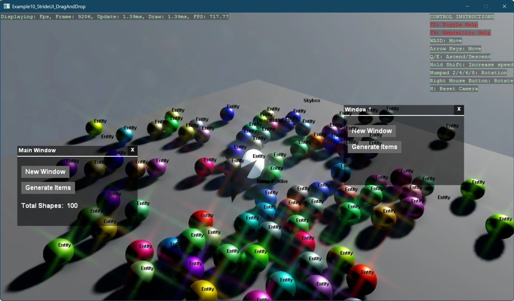

Stride UI - Draggable Window
This example demonstrates how to create interactive, draggable UI windows in Stride using custom UI components. The project showcases:
- Creating a draggable window system using Stride's built-in UI framework
- Implementing window management with proper z-index handling (windows coming to front when clicked)
- Building a UI manager that handles window creation and management
- Dynamically spawning 3D objects from UI interactions
- Tracking object counts and updating UI elements accordingly
The code sets up a basic 3D scene with a draggable UI window containing buttons to:
- Create additional draggable windows
- Generate random 3D sphere objects that fall with physics
Each window includes a title bar, divider line, close button, and maintains proper stacking order when interacted with. The main window also displays a counter showing the total number of 3D shapes in the scene.
This example implements the functionality through several key classes:
UIManager- Creates and manages UI windows, handles text updatesDragAndDropContainer- Root canvas that tracks and manages draggable elementsDragAndDropCanvas- Individual window implementation with title and interactive featuresPrimitiveGenerator- Creates and tracks 3D objects generated through UI actions
The project also includes cleanup functionality to remove objects that fall below a threshold, updating the counter accordingly. This demonstrates a complete UI workflow from user interaction to scene manipulation.
Note
This example requires the additional NuGet packages Stride.CommunityToolkit.Skyboxes and Stride.CommunityToolkit.Bepu. Make sure to install both before running the code.

View on GitHub.
using Example10_StrideUI_DragAndDrop;
using Stride.CommunityToolkit.Bepu;
using Stride.CommunityToolkit.Engine;
using Stride.CommunityToolkit.Rendering.ProceduralModels;
using Stride.CommunityToolkit.Skyboxes;
using Stride.Core.Mathematics;
using Stride.Engine;
using Stride.Games;
using Stride.Graphics;
using Stride.Rendering;
UIManager? _uiManager = null;
PrimitiveGenerator? _shapeGenerator = null;
const int ShapeCount = 100;
const int RemovalThresholdY = -30;
const string TotalCubes = "Total Shapes: ";
using var game = new Game();
game.Run(start: Start, update: Update);
void Start(Scene scene)
{
// Setup the base 3D scene with default lighting, camera, etc.
game.SetupBase3DScene();
// Add debugging aids: entity names, positions
game.AddEntityDebugSceneRenderer(new()
{
ShowFontBackground = false
});
game.AddSkybox();
game.AddProfiler();
_shapeGenerator = new PrimitiveGenerator(game, scene);
var font = game.Content.Load<SpriteFont>("StrideDefaultFont");
// Create and display the UI components on screen
CreateAndAddUI(scene, font);
// Add an example 3D capsule entity to the scene for visual reference
AddExampleShape(scene);
MoveToAnotherProjectOrSnippetExample(scene, game);
}
void Update(Scene scene, GameTime time)
{
foreach (var entity in scene.Entities)
{
if (entity.Transform.Position.Y < RemovalThresholdY)
{
entity.Scene = null;
_shapeGenerator?.SubtractTotalCubes(1);
_uiManager?.UpdateTextBlock($"{TotalCubes} {_shapeGenerator?.TotalShapes ?? 0}");
}
}
}
void CreateAndAddUI(Scene scene, SpriteFont font)
{
_uiManager = new UIManager(font, GenerateRandomSpheres);
_uiManager.Entity.Scene = scene;
}
void AddExampleShape(Scene scene)
{
var entity = game.Create3DPrimitive(PrimitiveModelType.Capsule);
entity.Transform.Position = new Vector3(0, 8, 0);
entity.Scene = scene;
}
void GenerateRandomSpheres()
{
var totalShapes = _shapeGenerator?.Generate(ShapeCount, PrimitiveModelType.Sphere);
_uiManager?.UpdateTextBlock($"{TotalCubes} {totalShapes ?? 0}");
}
static void MoveToAnotherProjectOrSnippetExample(Scene scene, Game game)
{
var vertices = new VertexPositionTexture[4];
vertices[0].Position = new Vector3(0f, 0f, 1f);
vertices[1].Position = new Vector3(0f, 1f, 0f);
vertices[2].Position = new Vector3(0f, 1f, 1f);
//vertices[3].Position = new Vector3(1f, 0f, 1f);
var vertexBuffer = Stride.Graphics.Buffer.Vertex.New(game.GraphicsDevice, vertices,
GraphicsResourceUsage.Dynamic);
int[] indices = { 0, 2, 1 };
var indexBuffer = Stride.Graphics.Buffer.Index.New(game.GraphicsDevice, indices);
var customMesh = new Mesh
{
Draw = new MeshDraw
{
/* Vertex buffer and index buffer setup */
PrimitiveType = PrimitiveType.TriangleList,
DrawCount = indices.Length,
IndexBuffer = new IndexBufferBinding(indexBuffer, true, indices.Length),
VertexBuffers = new[] { new VertexBufferBinding(vertexBuffer,
VertexPositionTexture.Layout, vertexBuffer.ElementCount) },
}
};
var entity = new Entity();
var model = new Model();
model.Meshes.Add(customMesh);
model.Materials.Add(game.CreateMaterial());
entity.Components.Add(new ModelComponent(model));
entity.Scene = scene;
}